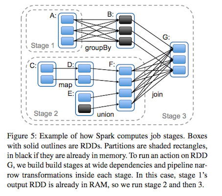

Motivated
- Iterative algorithms
- Interactive data mining tools
Reuse Intermediate
- Data Reuse: PageRank, K-means
- Interactive Data Mining: adhoc querys
Between MR jobs
- data replication
- dist I/O
- serialization
Frameworks
- Pregel
- HaLoop
Specific Patterns, not General
RDDs
- fault-tolerant
- parallel data structure
In-memory storage on clusters
- distributed shared memory
- key-value stores
- databases
Challenge: Fault Tolerance
- Replicate the data across machines
- Log updates across machines
Bandwidth is far lower than RAM
Interface
- Coarse-grained Transformations: map, filter, join
- build a dataset rather than the actual data
Programming
- MapReduce
- SQL
- Pregel
- HaLoop
RDD
- features
- read-only
- partitioned
- create
- data in stable storage
- other RDDs
- transformations
- map
- filter
- join
- lineage
- not materialized at all times
- information about how to derived from stable storage
- control
- persistence
- partitioning
- join: hash-partitioned in the same way
- Programming
- transformations: map, filter
- actions: count, collect
- save
- persist
Advantages
- backup tasks
- data locality
- degrade
App Not Suitable
- Best Suit: batch app, same operation to all elements
- Not Suit: asynchronous fine-grained updates
RDD Operations
- Transformations and Actions
- map: one to one
- flatMap: one to more
- groupByKey
- reduceByKey
- sort
dependencies
- narrow: map, pipline like, failure -> lost parents to be recomputed
- wide: join, mapreduce like, failure -> all ancestors to be recomputed

Memory Management
- LRU
Checkpoint
- api
- auto
REF
- Resilient Distributed Datasets: A Fault-Tolerant Abstraction for
In-Memory Cluster Computing